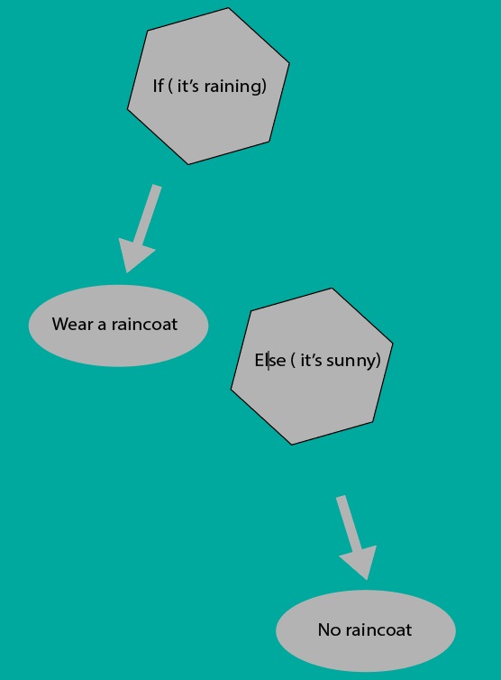

<!DOCTYPE html>
<html lang="en"></html>
<head>
    <style>
     * {
    font-family: 'Gill Sans', 'Gill Sans MT', Calibri, 'Trebuchet MS', sans-serif;
    margin: 1vw;
}
     body{
        background-image: linear-gradient(to left,rgb(163, 169, 240),rgb(0, 153, 255), rgb(219, 111, 178),rgb(177, 79, 216) );

     } 
     h1 {
    font-size: 3vw;
    
    }
    h2{
        font-size: 2vw;
    }
    .navigation {
        overflow: hidden;
        background-image: linear-gradient(to left,rgb(163, 169, 240),rgb(0, 153, 255), rgb(219, 111, 178),rgb(177, 79, 216) );
    }
    p{
        font-size: 20px; 
    }
    p2{
        font-size: 20px; 
    }
    p3{
        font-size: 20px; 
    }
    p4{
        font-size: 20px; 
    }
    p5{
        font-size: 20px; 
    }
    p6{
        font-size: 20px; 
    }
    p7{
        font-size: 20px; 
    }
    p8{
        font-size: 20px; 
    }
    p9{
        font-size: 20px; 
    }
    .navigation a{
        float: right;
        display: block;
        color: #000000;
        text-align: center;
        padding: 1px 10px;
        font-size: 2vw;
    }
   
    
    table {
     font-family: arial, sans-serif;
        border-collapse: collapse;
    width: 80%;
    }

    td, th {
    border: 1px solid #dddddd;
    text-align: left;
    padding: 8px;
    }
    
  
  .button{
    background-color:rgb(207, 132, 230) ;
    font-size: 40px; 
    
  }
  
 
      
            
    </style>  
    <meta charset="UTF-8"/>
    <meta name="viewport" content="width=device-width, intial-scale=1.0"/>
    <title> Early Start First Project </title>

    <div class="navigation">

        <a href="Pages\Account.html">Account</a>
        <a href="Pages\Progress.html">Progress</a>
        <a href="index.html">Home</a> </div>

    

</head>

<body>
    <h1>Learn</h1>

    <hr>
    <h2>What is a Datatype?</h2>
    <p>In computer science, we use programming to tell a computer what to do and how to perform certain tasks.In order to perform many different tasks, programming languages support different data representations(data types) to store different kinds of values</p>
    <p2>For example, if we want to store a whole number such as 45, we can represent that as an integer. Integers are one type of data type that store numbers that do not conaint any decimals. Another data stype is double which stores numbers that contain a decimal or fraction. If you want to keep track of 2 dollars and 50 cents, you can store that as a double (2.50)</p2>
    <p3>Boolean is a data type that store a true or false value. You can only store "true" or "false" when representing a boolean data type.The farther you go in computer science, the more variable you will learn so that you can accomdate many different types of data that you want to be presented in a computer. </p3> 
    <table>
        <tr>
          <th>Data Type</th>
          <th>Example</th>
          
        </tr>
        <br>
         <button class="button" id = "back"><a href="DatatypeQuiz1.html">Datatype Quiz</a></button>
        <tr>
          <td>Integer:whole numbers</td>
          <td>6</td>
        
        </tr>
        <tr>
          <td>Double:decimal or fraction numbers</td>
          <td>3.14</td>
          
        </tr>
        <tr>
          <td>Boolean: true or false statements</td>
          <td>true</td>
          
        </tr>
        <tr>
          <td>char:characters/letters</td>
          <td>'H'</td>
          
        </tr>
        <tr>
          <td>String: many characters(phrases)</td>
          <td>"HelloWorld"</td>
         
        </tr>
        <tr>
          <td>float:decimal or fraction values with only 6-7 digits</td>
          <td>6.99</td>
        </tr>
        <tr>
            <td>byte:whole numbers from -128 to 127</td>
            <td>112</td>
        </tr>
      </table>
      <h2>Variables</h2>
      <p4>Now that we have data, we can store the data in a name that the data is identified with along with the type of data it is. Variables are the containers that store the data. For example, if you want to store how much money is currently in your bank you would put the number in side of a variable. This variable can be called anything as long as its proper datatype is delcared right before the variable name. To sore yoru bank balance you can write this as "double myBankBalance = 436.67;"</p4>
      
      <p5>By storing your data under proper names and data types, you can access them in a program very easily and efficiently. 
        If your data is being manipulated or changed in a certain patter, you can call your variable by its name and use it in 
        your lines of code. This way your storage containger update your value to its current one.
      </p5>
      
      <br>

      <button class="button"><a href="VariableQuiz1.html">Variables Quiz</a></button>
      <h2>The Boolean Operators</h2>
      <p6>Boolean Operators examine the relationship of two or more values. We can let certain events happen if the relationship between  variable are a certain. For example, it the weather says its raining, you will bring a raincaost. In the same way, we can figure out the relationship between variables by using boolean operator. A boolean operators will always produce true or false (0 or 1). Below is a table with some common boolean operators that can be used for different types of relationships. </p6>
      <table>
        <tr>
          
          <th>Boolean Operators</th>
          <th>Example</th>
          
        </tr>
        <tr>
          <td>Equal to: examines if variable A and variable are the same. If this is true, it will return true and false is the other around. </td>
          <td> A==B</td>
        
        </tr>
        <tr>
          <td>Not Equal to: examines if the variable A is not equal to variable B</td>
          <td>A != B </td>
          
        </tr>
        
        <tr>
          <td>Greater than: examines if value A larger than value B</td>
          <td>A>B</td>
          
        </tr>
        <tr>
          <td>Less than: checks if variable A is less than variable B</td>
          <td> A < B </td>
         
        </tr>
        <tr>
          <td>Greater than or equal to: checks if variable A is the same as B or if A is larger than b in numerical value</td>
          <td>A>=B</td>
        </tr>
        <tr>
            <td>Less than or equal to: examines if A is smaller than B or if they are the same</td>
            <td>A<=B</td>
        </tr>
        <tr>
          <td>And: If we want to check a attribute of A and B or multiples attributes about a single variable, we use the "and" operator</td>
          <td> A==1 && B == 1</td>
          
        </tr>
        <tr>
          <td>Or: This operator will return true if any condition is true. For example, if we want to check if at least one variable is 10 we can say this || or that. </td>
          <td> A || B </td>
          
        </tr>
        <tr>
          <td>Not: As mentioned ealier, not is used to say things are not equal to each other. But they can also be ussed to reverse a logic statment. If you want to say false you can use the not operator in front of a true statment which makes it false. </td>
          <td> !A </td>
          
        </tr>
        
      </table>
      <button class="button"><a href="BooleanOperatorQuiz1.html">BooleanOperatorQuiz</a></button>
      <h2>If.....Else?</h2>
      <p7>Now that we have learned different fata types, variables and operators, we can use all of these concepts and apply them into if else statments. Earlier, we said if its raining, then we wear a rain coat. This is is an if statment because it has a condition that its raining. And based on the condition, we perform an action which was putting on a raincoat. In an if else statment, we put a  inside an if statment and then we put an action under the else statment. The diagram below can help you visually see what is happening. </p7>
      <p/7>


       

      <br>
      <button class="button"><a href="Pages/Learn.html">Learn</a></button>
      <h2>For Loops </h2>
      <p9>
        For loops are great tools that allow you to perform certain task as 
        along as a certain condition is meet. For loops allow you run lines of codes 
        for a certain number of times. For example, if you want to print "Happy Birthday" 
        10 times you could have a for loop that runs the print statment 10 times. For loops
         save a lot of time in your code because if you want to repeat an action several times,
        then you need to declare your actions however many times. But with the for loop, you 
        can compress that code inside of a for loop that will do the same job as manually repeating an action.  
      </p9>
      <br>
       
      <br>
      <button class="button"><a href="Pages/Learn.html">Learn</a></button>

    </body>
</html>


